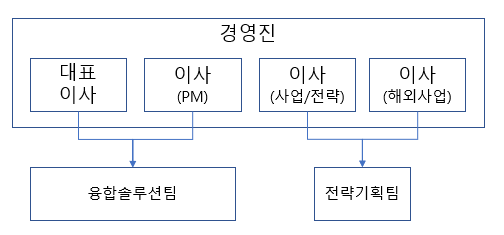
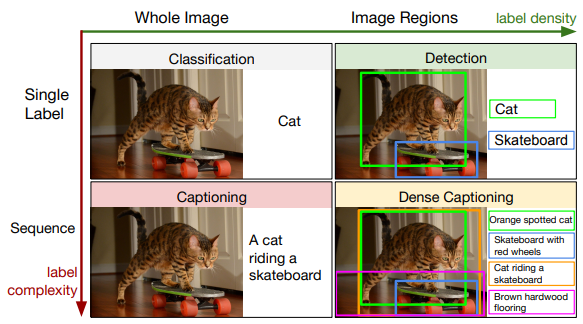
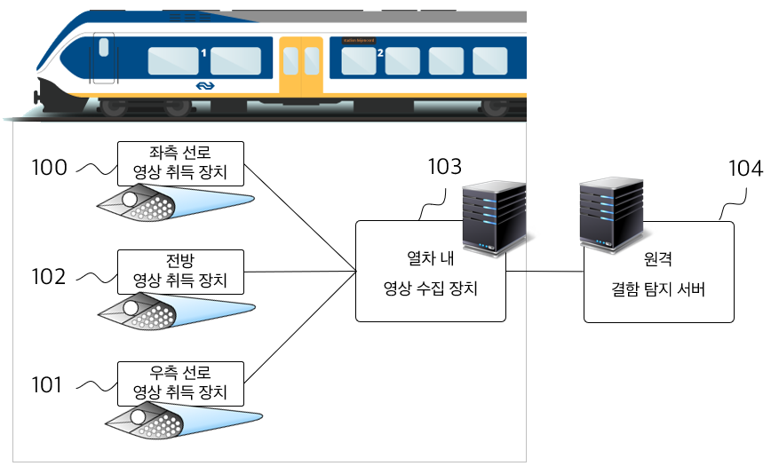
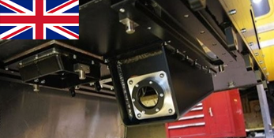
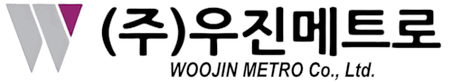

붙임1 | 대기업 및 공기업, VC연계파트 참가신청서(양식) |
참여구분 선택 | □ 1순위 (아시아나IDT) | □ 2순위 (벤처캐피탈리스트) |
(비트플로) |

1. 회사 개요
○ 일반 현황
회사명 | 대표이사 | 주소 | 주요사업 |
비트플로(주) | 김성준 | 서울 강남구 자곡로7길 4, 2층, ICT로봇 리빙랩 | 경전철 전산운영, 인공지능(비전) SW 연구, 증권사 HTS UI 개발 |
○ 사업 영역, 사업 목표 등
<사업 영역>
- 경전철 전산시스템 운영
- 인공지능(컴퓨터비전), 증강현실, 블록체인, IoT 융합 SW 구축
- 기타 고객사 맞춤형 SW 솔루션 구축
<사업 목표>
- 전산시스템 운영/유지보수 및 SM 매출을 기반으로, 중기부/민간 R&D 지원자금을 통한 시각지능 열차 시스템 솔루션 구축이 목표
- 열차용 시각 지능 솔루션 구축 후, 다양한 산업에 적용되는 시각 지능 SW 제품군 확대.
○ 사업 내용
<SI＊SM 매출 비중>
① 경전철 전산시스템 운영 50%
② 증권사 HTS 등의 UX 구축 30%
③ 블록체인 연계 SW 등 기타 SW 구축 20%
<연구개발 비중>
① 인공지능 컴퓨터비전 SW 연구개발 80%
② 기타 고객사 맞춤형 SW 솔루션 연구개발 20%
○ 경영진, 조직구조 등
<대표이사 및 경영진>
① 대표이사: 연세대 공학대학원을 졸업하고 LG CNS 등 SW 기업에서 15년간 연구원으로 근무
② 이사(전략기획): 단국대를 졸업하고 증권사 등 국내 금융권에서 20년간 UI/UX 및 사업 전개.
③ 이사(프론트엔드): 20여년간 국내 메이저 대기업의 프론트엔드 구축과 PM 담당.
⑤ 이사(해외사업): 정보경영 전공으로 이스라엘 텔아비브 시민으로 당사 해외 사업 전개 시 자문 및 컨설팅 담당.
<조직구조>

① 소프트웨어엔지니어 그룹(융합솔루션팀): 웹 SW 백엔드, AI(컴퓨터비전, 딥러닝) 연구개발.
② UX/UI 그룹(융합솔루션팀): 디자인, 웹 SW 프론트엔드
③ 전략기획 그룹: 사업 계약 및 영업
2. 핵심 경쟁력
○ 핵심 기술
① 인공지능(AI) 컴퓨터비전

- 딥러닝(CNN) 기술을 통해 동영상을 인공지능으로 빠르게 분석하여 정합한 부분, 또는 불량한 부분을 검출하는 SW 영상 분석 기술 보유.
-특히, 열차가 운행하는 선로의 결함 및 장애물을 실시간으로 탐지하고 이력과 통계를 제공하는 ”열차의 눈“, 열차용 비전시스템 연구 개발 중.

② 증강현실
- 사용자가 보고있는 실시간, 또는 녹화된 영상위에 의미있는 물체들을 추적하고 마킹하는 AR 기술 보유
③ 블록체인
-하이퍼레저 및 퍼블릭 블록체인과 연계하여 스마트컨트랙트(체인코드) 작성 및 실행을 통한 전자문서 보관 및 이력 추적 구현.
○ 핵심 특허
(출원) 열차 선로 상의 위험 요소를 탐지하기 위한 영상 수집 시스템
3. 환경 분석
○ 동종 제품 개발사 또는 동종 업계 현황 등
<동종 제품 개발사> Balfour Beatty (영국)

-당사가 연구 개발하는 열차 선로결함 탐지 시스템의 유일한 제작사로, 전세계에서 유일한 제작사.
-당사가 연구 개발에 성공할 경우 세계에서 2번째, 국내 최조 제작사가 됨.
4. 향후 전망
○ 연구개발 목표 및 사업화 추진방향
<경전철운영사와협업> 당사가 시스템 운영 및 유지보수하고 있는 경전철운영사에 사업을 제안하여 초도 개발 제품을 열차에 탑재 시범 운용.
① 시제품 개발 예상시기: 2021년 3분기.
② 영상 분석 및 정확도 고도화: 2022년 2분기
<사업화추진방향>
① 경전철운영사와 협력: 서울, 수도권, 부산, 김해 등 도시철도(경, 중전철) 운영사와 재난 안전확보를 위해 공동투자 및 협업 모색.
② 열차 제작사와 협업: 도시철도의 고급화/안전성 확보를 위한 열차용 비전 모듈 공급 MOU.
 |

○ 비즈니스 로드맵
① 시제품 운행: 당사 비전시스템을 국내 경전철 1개사 탐재 후 시범운영.
② 제품 고도화: 결함 인식률 고도화, 탐지 정확도 향상 연구 개발.
③ 경전철에서 중전철로, 중전철에서 일반 열차로 제품 개선 및 국내 시장 확대
④ 당사 외국인 임원을 통한 해외시장 진출
⑤ 다양한 AI 컴퓨터비전 SW 연구개발
○ 향후 계획
① 민간 Seed 투자 1억원 이상 유치
② 창업진흥원 TIPS 지원 및 선발
③ 제품 개발 완료
④ 제품 공급 확대
⑤ Series A 투자유치
5. 기타(부가적으로 설명하거나 목적에 맞는(투자 or 협업) 희망 내용을 자유 기재)
○ 연구개발에 집중할 수 있도록, 2년 이상 임대할 수 있는 서울소재 5인이하 소규모 사무실과 Seed 투자 1~2억원 희망합니다.
붙임2 | 개인정보 수집(이용)·제공 이용 동의서 |
개인정보 정보 수집·이용·제공 동의서 |
창업진흥원 재도전창업기업 IR 및 네트워킹 행사 참가신청과 관련하여 『개인정보보호법』 제15조 제1항 제1호, 제17조 제1항 제1호, 제23조 제1호, 제24조 제1항 제1호, 『중소기업창업지원법』 시행령 제32조의 2에 따라 아래와 같이 개인정보의 수집·이용 및 제3자 제공에 관하여 귀하의 동의를 얻고자 합니다. |
1. 수집․이용에 관한 사항
□ 수집·이용 목적
◦ 「재도전창업기업 IR 및 네트워킹 행사 참가신청｣ 관련한 평가 및 사업 운영·관리를 목적으로 합니다.
□ 수집·이용할 항목
◦ 성명, 주민등록번호, 주소, 연락처(전화번호, 핸드폰번호, e-mail), 소속, 계좌번호
□ 보유․이용기간
◦ 위 개인정보는 수집․이용에 관한 동의일로부터 보유목적 달성 시 또는 정보
주체가 개인정보 삭제를 요청할 경우 지체 없이 파기합니다.
◦ 단, 사업종료일 후에는 사업의 사후관리만을 위하여 보유․이용되며 보존기간은 선정평가일로부터 이후 5년까지 입니다.
□ 동의를 거부할 권리 및 동의를 거부할 경우의 불이익
◦ 위 개인정보의 수집·이용에 관한 동의를 거부할 권리가 있습니다.
단, 위 항목은 목적에 필요한 최소한의 정보로서 필수항목이므로 동의하지
않으시는 경우 참여가 불가합니다.
□ 위와 같이 귀하의 개인정보를 수집·이용하는 것에 동의하십니까?
■동의함 □동의하지 않음
고유식별정보 처리에 | 주민등록번호를 수집·이용하는 것에 동의하십니까? ■동의함 □동의하지 않음 |
2. 제3자 제공에 관한 사항
□ 제공받는 자
◦ 중소벤처기업부(재도전창업기업 IR 및 네트워킹 행사 평가위원) 및 행사용역(운영) 업체
□ 제공받는 자의 이용 목적
◦ 재도전 성공패키지(재도전창업기업 IR 및 네트워킹 행사) 운영 관련 자료 활용
□ 제공할 개인정보의 항목
◦ 수집·이용에 동의한 정보 중 업무 목적 달성을 위해 필요한 정보에 한함
□ 제공받은 자의 개인 정보 보유․이용 기간
◦ 위 개인정보는 제공된 날부터 5년간 보유·이용되며 보유목적 달성 시 또는 정보주체가 개인정보 삭제를 요청할 경우 지체 없이 파기합니다.
□ 동의를 거부할 권리 및 동의를 거부할 경우의 불이익
◦ 위 개인정보의 제공 동의를 거부할 권리가 있습니다. 단, 동의하지 않으시는 경우 평가위원으로 참여가 불가합니다.
□ 위와 같이 귀하의 개인정보를 제3자에게 제공하는 것에 동의하십니까?
고유식별정보 처리에 | 주민등록번호를 제3자에게 제공하는 것에 동의하십니까? ■동의함 □동의하지 않음 |
2020년 8 월 25 일
동의자 성명 : 김 성 준 (서명)